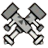

| ➤ Active Feature : | ※ Each day, two weapons are selected to receive passive buffs until next day (Taiwanese timezone). Everyone benefit from it automatically if they use the weapons of the day.
※ You can figure out which weapons got their active feature up when looking at the top of your screen while being in Mezeporta. |
|
| Sword and Shield (SnS) | | Elemental and Status increased 1.2x on attacks. This is internal only and does not change the value on your weapon status. |
|
| Dual Blades (DB) |  | When in Demon mode: Stamina consumption lowered by 0.5x. If Marathon Runner is activated, it is further reduced to 1/3.
When in True Demon mode: HP consumption lowered by 0.5x. |
|
| Greatsword (GS) | | Unsheathe attacks gain +100% affinity. This is additional and goes on top of any existing affnity and works with Critical Conversion.
This also applies to Extreme Style attacks from Parries, and gives the raw increasing effect of skill Critical Conversion (no +30%) while you are performing these actions. |
|
| Longsword (LS) | | Full Spirit bar buff effect increased 4.0x (+10 attack > +40 attack). |
|
| Hammer (Hammer) | | Stun damage increased 1.5x. Stacks with Sigil and Caravan Skills. |
|
| Hunting Horn (HH) |  | Melody buffs duration 2.0x. Stacks with Flute expert. |
|
| Lance (Lance) | | Guard Skill goes up by 1 level. Activates Reflect +3 by default. |
|
| Gunlance (GL) | | Wyvern Fire and Shelling Damage increased 1.5x. Does not affect Elemental and Status values. |
|
| Tonfa (Tonfas) |  | All Ryuuki finisher (explosion) effects are buffed.
Head: KO damage duration: 20s > 30s. | Tail: Bleeding: 1.5x Damage. | Body: Sharpness return: 15 > 20. | Gunner Attack Up: 25 > 50. |
|
| Switch Axe (SAF) |  | Increases phial meter recovery by primary recovery mechanics (reloading or guarding). |
|
| Magnet Spike (MS) | | Increases pin finisher multiplier by 1.25x (600MV > 750MV).
Stun value in impact mode is increased by 1.3x, and cutting damage to the tail in slash mode is increased by 1.1x. |
|
| Light Bowgun (LBG) | | Damage increased 1.1x at critical distance. Status attack increased 1.2x. |
|
| Heavy Bowgun (HBG) | | Damage increased 1.1x at critical distance. |
|
| Bow (Bow) |  | Charge time decreased 0.85x. Stacks with Auto-Reload. |